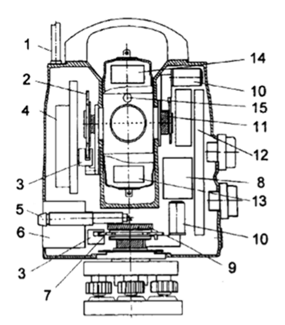

Мавзу: Замонавий электрон тахеометрлар
Reja.
1. Тарихий маълумотлар
2. Электрон тахеометрларнинг конструктив хусусиятлари
Ҳозирги вақтда геодезик асбоблар бозорида электрон тахеометрлар кенг миқиёсда тақдим
этилмоқда. Энг машхур ишлаб чиқарувчи фирмалар:
-Leica Geosystems
-Sokkia,
-Topcоn,
-Nikon
-Trimble (Trimble 2001 йил февралда Carl Zeiss ва Spectra Precission фирмаларини
бирлаштирди) – техник ва эксплуатацион характеристикалари билан бир-биридан фарқ қилувчи
турли турдаги геодезик асбобларни таклиф қилишмокда. Вақт ўтган сари электрон
тахеометрларнинг функционал имкониятлари ўзгариши ва такомиллашиб бориш тарихини кўришимиз
мумкин.
Биринчи авлод тахеометрларида (70-80 йиллар) масофа ўлчаш, йўналиш ва бурчаклардан
саноқ олиш жараёни автоматлаштирилди. Ўлчаш натижалари электрон таблога чиқарилди, лекин
уларни асбобнинг хотирасида сақлаш мумкин эмас эди. Тахеометрнинг 1-авлодига ТаЗM киради.
ТаЗМ ўрнатилган микропроцессор бошкариш, текшириш вазифасини ва оддий ҳисоблаш
операцияларини амалга оширади: қия масофа горизонтал қўйилиши, нисбий баландлик ва
координаталарни аниқлаш.
Кейинги авлод тахеометрларида (80-йиллар охири ва 90 йилларнинг биринчи ярми) ўлчаш
натижаларини маълумотларни жамловчи қурилмага ёзиш, кейинчалик бу маълумотларни интерфейс
қурилма (адаптер) ёрдамида компьютерга узатиш, ҳамда клавиатура ёрдамида тахеометрга харфли
рақамли маълумотларни ёзиш имкони туғилди. Уларнинг таркибида янги юқори тезликли микро
ЭХМларни ва алгоритмик усулларни қўллаш ўлчаш жараёнида асбоб хатоликлар таъсири учун
тузатмани автоматик равишда ҳисобга олиш имконини берди. Иккинчи авлод тахеометрларига 2Та5
ва ТС 1600(Leica AG)тахеометрлари ва Elta (Carl Zeiss) сериясидаги асбоблар киради.

1-антенна;
2-вертикал доира;
3-ҳисобловчи (саноқ олувчи) головка,
4-радиомодуль,
5-марказлаштиргич;
6-аккумляторлар;
7-горизонтал доира;
8-қиялик датчиги;
9-вертикал ўқ;
10-мотор;
11-горизонтал ўқ;
12-микро ЭХМ;
13-нишонга туғрилаш қурилмаси;
14-светодалномерли блок;
15-рейка турган жойини кўрсатувчи қурилма.
Электрон тахеметрнинг ишлаши учун компенсатор ёки асбобнинг айланиш ўқининг бир ўқли
қиялик датчики керак.
Компенсатор, масалан, ТаЗМ (УОМЗ), EltaR50-EltaR45 (Carl Zeiss) тахеометрларда оптик
теодолитларидек, асбоб айлниш ўқининг турли қияланишларида, бир визир нишонга визирланганда
вертикал доира бўйича саноқнинг доимийлигини автоматик равишда таъминлайди. Расмда ТаЗМ
тахеометрининг вертикал доирасида компенсатор таъсвирланган.
ТаЗМ нинг вертикал бурчак индекси ўзи ўрнатувчи маятник рамкасида, шарикли подшипник
билан ўқга осилган, лимб штрихи тасвирини бир томондан бошқа томонга узатувчи проекцияловчи
система ўрнатилган. Визирлаш йўналишида тахеометр қияланганда, 6 пентапризмадан, 5 вертикал
доира линза кўпригидан ва 4 ёпқичли призмадан ташкил топган проекцион система шовун йўналиши
ҳолатини эгаллайди. 10–маятник магнитли демпфер билан таъминланган. Бу компенсаторлаш, 3
подшипникларни ишлатишда подшипниклар бир хил диаметрли шариклар билан тайёрланмаганлиги
оқибатида уни ишлаш аниқлиги пасайишига олиб келади.
Замонавий зарядли боғловчи асбоблар (ЗБА) технологияси Leica Geosystems AG формасининг TRS
1100 тахеометрларини қиялик датчикларида фойдаланилган. Бу датчиклар конструкциясининг ўзига
хослиги билан фарқ қилади. Улар битта чизиқли ЗБА ёрдамида, асбобнинг вертикал ўқи қиялигини
иккита йўналишда, визир ўқи йўналишида ва унга перпендикуляр йўналишида ўлчаш имкониятини
беради. Расмда датчик конструкциясининг схематик кўриниши келтирилган. 2-суюқлик юзаси
шартли горизонт ҳисобланилади. 2- суюқлик юзасида икки мартда сингандан сўнг, чизиқли
ЗБАдаги 6-призма бирқиррасига тушурилган, 1-штрихлар тасвири 7-ёруғлик диодлари билан
ёритилиб, 3 ва 4 компонентлардан ташкил топган оптик система билан шаклланади. Штрихларнинг
учбурчак шаклидаги растрини қўллаш туфайли қияликнинг иккита компоненти ЗБА да қайд этилади.
Расмда 1 – растр тасвирланган.
Алидада бўйлама қияланганда штрихлар орасидаги масофа ўзгаради, кўндаланг қияланганда
ЗБАнинг сезувчан юзаси бўйлаб барча таъсвирлар оғирлик маркази силжийди. Икки карра
синдиришни қўлланилганда асбоб айланиш ўқининг TPS1100 (Leica Geosystems AG) тахеометри
қияланишига датчик сезгирлиги ошади. Датчик кичик ҳажмга эга ва асбобни айланиш вертикал
ўқига симметрик равишда жойлашади. Шу сабабли асбобни тез бурганда суюқликнинг синдирувчи
юзаси горизонтал ҳолатдан четлашмайди ва датчикнинг ишлаш аниқлигига теодолит таглигининг
ҳарорат деформациясини таъсири камаяди.
Ўлчашниг кодли системаларида оптик системаларидаги каби, ўлчанувчи миқдор бевосита лимбдан
саналади. Wild TC (Leicа Geosystems AG) электрон тахеометрлари ва уларнинг модификациялари,
ҳамда ТС 600 Е ва ТС 400 Е (Геодезик асбоблар. Екатеринбург) тахеометлари кодли системаларга
эга. Бу асбобларда ўлчаш системаси лимбдан ташкил топган бўлиб, унга иккилик код туширилган,
ёруғлик диоди ва оптик системалари фотодиодли матрицада доира бўлакларининг тасвирини
шакиллантиради.